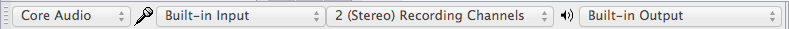

Tutorial - Recording Computer Playback on Mac
Alternatively there are commercial applications which can record computer playback to a file that is importable into Audacity, or that like Soundflower can provide an additional audio device from which Audacity can record computer playback.
| Copyright or website restrictions may prevent you recording or distributing material. Check first. |
Contents
- Loopback cable - A simple and effective method of recording what is playing on the computer
- Software - Free and ommercial recording applications that include ability to record computer playback
Use a loopback cable
This is a simple and effective method of recording what is playing on the computer. It has the disadvantage that the audio signal is converted from digital to analog, then from analog to digital, instead of staying in the digital domain. This may result in some slight increase in noise and distortion.
- Using a cable with a stereo mini-plug (1/8") at each end, connect the headphone output port to the line input port.
- At this point you will no longer be able to hear what is playing on the computer. As a workaround, you could attach a single to double stereo connector to the output port provide an extra jack for speakers or headphones.
- Choose and select the Sound preferences panel.
- In the Sound preferences panel:
- Click on the Output tab, then select "Line Out" from the "Choose a device for sound output" list.
- Click on the Input tab, then select "Line Input" from the "Choose a device for sound input" list.
- Leaving the Sound preferences panel open, start sound audio playing on the computer (this could be from iTunes, or streaming audio, or some other source).
- Adjust the Input volume slider so that the top 3 bars of the Input level meter do not light up on the loudest passages, but the rest of the bars do light up.
- Close the System Preferences window.
- In Audacity's Device Toolbar select or similar as Recording Device. Note you need to choose a line-in for this, not a four-position port meant only for connecting a headset.
- 
- Click on the Transport menu and make sure that "Software Playthrough" is not checked.
|
All system alert sounds such as email and application alerts will be recorded using this method. If you have iCal alerts or have turned on event sounds in Mail, you may want to turn them off. You should also quit any application that may make an alert sound while you are recording. |
Use additional software
Alternatively there are software applications which can record computer playback to a file that is importable into Audacity, or that can provide an additional audio device from which Audacity can record computer playback.
See this page in the Audacity Wiki for details.